평가기준 읽기
어떤 글을 쓰면 친구에게 시가 잘 전해질까요?
학생은 세 평가요소를 자기 말로 풀어 쓴 뒤 선생님의 기준과 비교합니다. 예시 글의 수준을 판단하고, 친구와 판단이 갈린 대목을 이야기합니다.
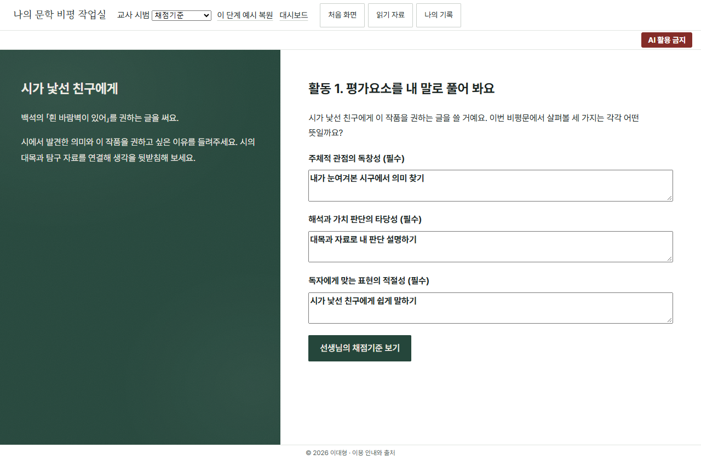

제작 배경
“가난하고 외로운데 왜 높다고 했을까?” 시를 읽다 이런 물음이 생겨도, 막상 비평문을 쓰려면 무엇부터 말해야 할지 막막합니다. 작업실은 학생이 처음 품은 질문을 글 끝까지 가져갈 수 있도록 만들었습니다.
시구와 자료를 담을 때는 그 옆에 내 해석을 적고, 초고를 쓸 때는 그 근거를 곁에 펼쳐 둡니다. 교사는 완성된 글과 함께 학생이 무엇을 골랐고 어디에서 생각을 바꿨는지도 살펴볼 수 있습니다.
쓰다가 생각이 막히면 시와 자료를 다시 펼칩니다. 앞서 골라 둔 대목이 자기 판단과 어울리는지 확인할 수 있습니다.
글을 쓰기 전에 같은 예시를 채점해 봅니다. 서로 다르게 읽은 문장을 짚으며 ‘근거가 분명하다’는 말의 뜻을 맞춰 갑니다.
AI에게 묻기 전에 어떤 독자의 반응이 필요한지 정합니다. 받은 조언 중 무엇을 받아들일지는 글쓴이가 결정합니다.
보고 싶은 활동을 고르세요. 학교용 템플릿에 수업용 예시를 넣어 실행한 화면입니다. 이미지를 누르면 크게 볼 수 있습니다.
평가기준 읽기
학생은 세 평가요소를 자기 말로 풀어 쓴 뒤 선생님의 기준과 비교합니다. 예시 글의 수준을 판단하고, 친구와 판단이 갈린 대목을 이야기합니다.

사례 판단
가상 학생 두 명의 글과 작성 기록을 읽고 어느 쪽에 더 높은 점수를 줄지 의논합니다. 같은 기록을 보고도 판단이 달라질 수 있는 까닭을 묻습니다.
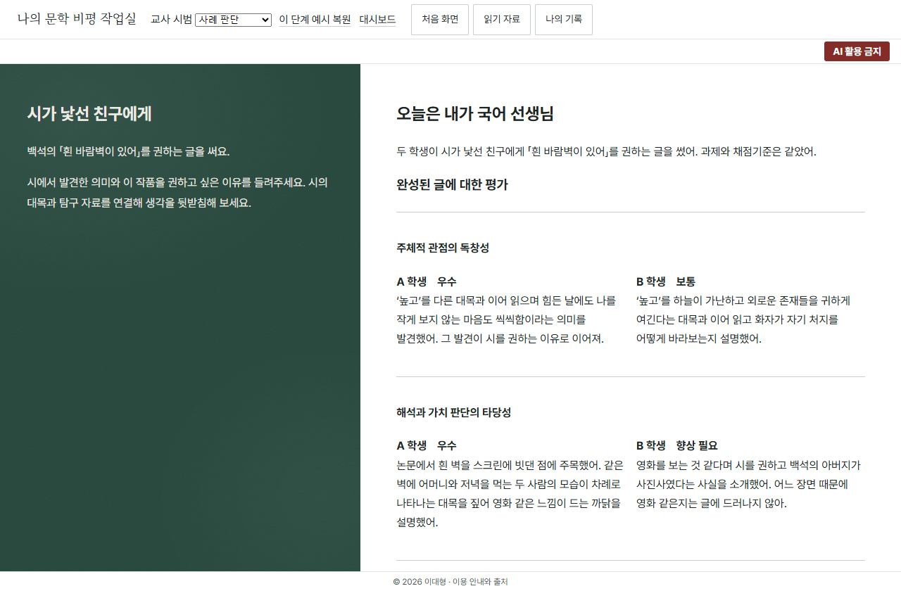
AI 활용 규칙
AI를 쓸 수 있는 시점과 부정행위에 관한 교사의 규칙을 읽고, 그 범위에서 자기 약속을 씁니다. 시구를 고르는 일, 질문을 만드는 일, 초고에 대해 조언을 구하는 일을 나누어 생각해 봅니다.
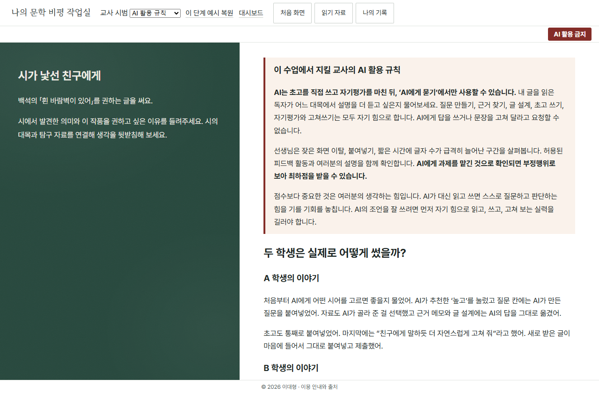
질문 만들기
마음에 걸린 시어를 고르고 그 말이 궁금한 까닭을 적습니다. 시범 글을 띄워 ‘높고’를 가리고 읽었을 때와 다시 넣어 읽었을 때의 느낌을 나눠 보세요.
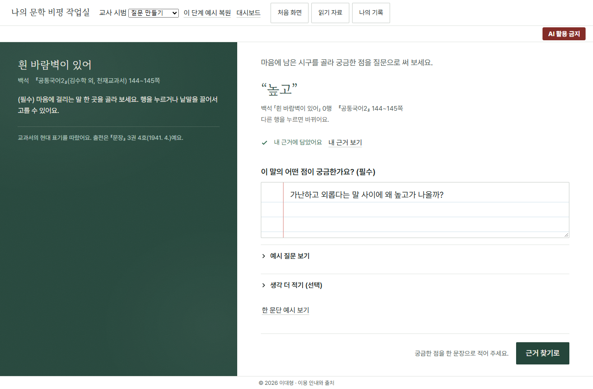
근거 찾기
시에서 찾은 대목을 다른 작품이나 연구 자료와 함께 읽습니다. 글에 쓸 부분을 담고, 이 대목이 내 질문과 어떻게 이어지는지 기록합니다.
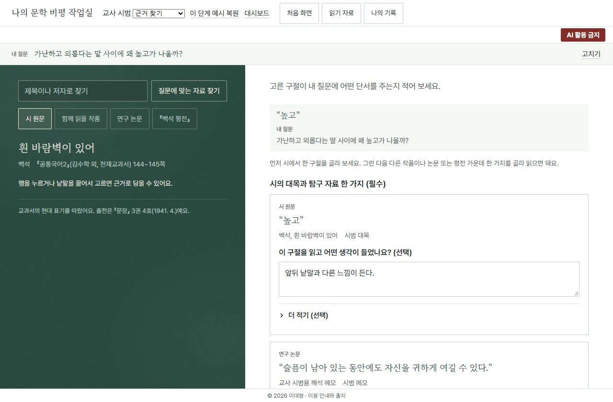
글 설계하기
시와 자료에서 담아 둔 근거를 펼쳐 보고 내 답과 이어지는 것을 고릅니다. 다른 자료를 읽고 처음 생각이 달라졌다면, 달라진 까닭도 글의 한 갈래가 됩니다.
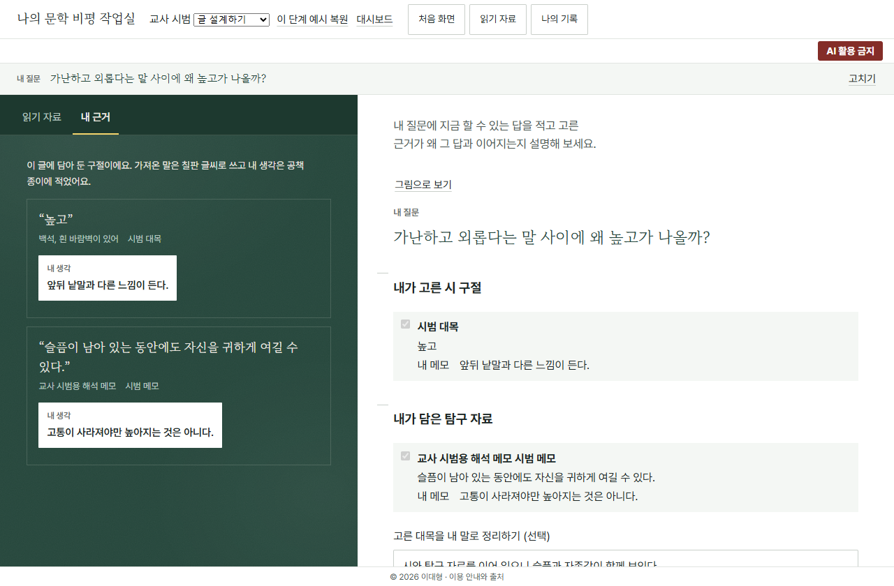
초고 쓰기
한쪽에 글 설계를 펼쳐 두고 다른 쪽에서 초고를 씁니다. 친구에게 들려주고 싶은 대목, 그 대목을 읽은 내 생각, 이 시를 권하고 싶은 이유를 연결합니다.
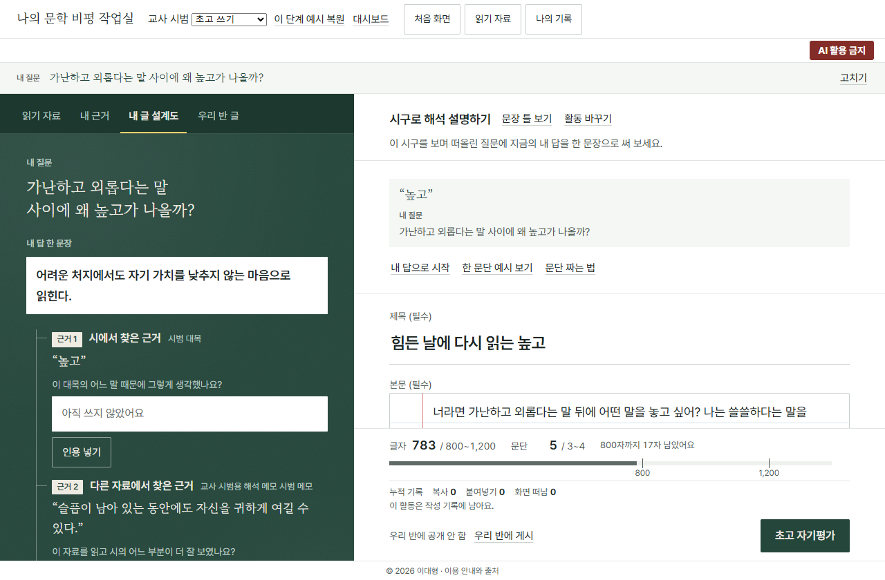
AI에게 묻기
초고를 스스로 평가한 뒤 AI에게 받고 싶은 피드백을 정합니다. 요청과 초고를 복사해 사용할 수 있어, 글쓴이가 어떤 조언을 구할지 먼저 결정합니다.
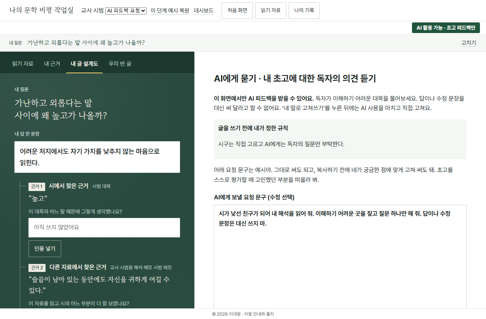
고쳐쓰기
독자의 질문을 참고해 문장을 고치고 수정한 이유를 남깁니다. 마지막에는 초고에 사용한 평가기준을 다시 펼쳐 자기 글을 살핍니다.
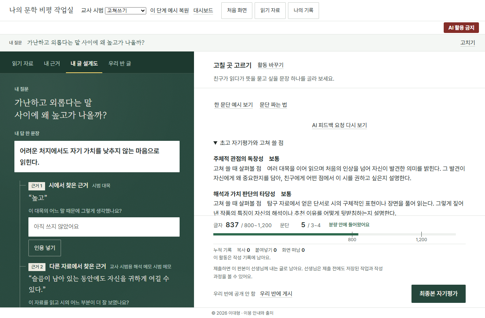
교사 대시보드
학급 현황에서 학생의 작업 단계를 살피고 개별 글을 열어 봅니다. ‘학생 화면으로 시범 쓰기’를 누르면 교사용 예시로 수업 장면을 직접 보여 줄 수 있습니다.
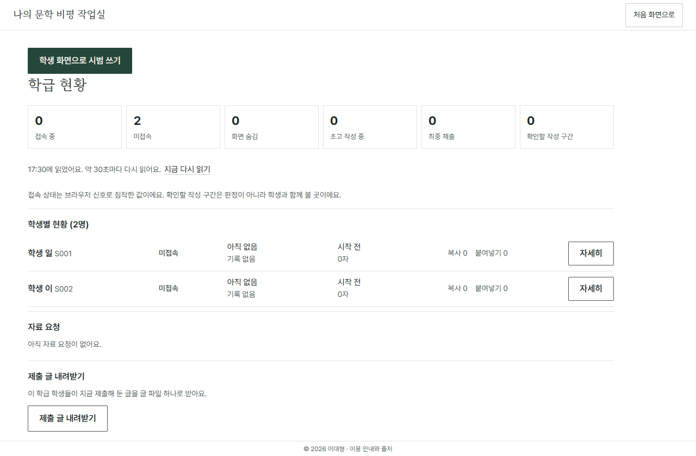
세 평가요소의 뜻을 적고 예시 글에 수준을 매깁니다. 두 가상 학생의 작성 기록을 보고 자신의 AI 활용 규칙도 정합니다.
마음에 남은 시어로 질문을 만들고 시와 탐구 자료에서 근거를 모읍니다. 글 설계에서 앞서 고른 대목과 메모를 다시 펼쳐 자기 답을 씁니다.
초고를 자기평가하고 AI에게 물을 내용을 다듬습니다. 버튼을 누르면 요청과 초고가 함께 복사됩니다. 피드백을 참고해 자기 말로 고친 뒤 다시 평가하고 제출합니다.
교사 대시보드에서 시범 글을 열고 오늘 보여 줄 단계를 고르세요. ‘높고’를 읽고 쓴 예시가 미리 들어 있습니다. 학생들과 다른 해석을 의논하며 직접 수정하거나, 그 단계만 기본 예시로 되돌릴 수 있습니다.
교사 시범 글은 학생 통계와 분리됩니다. 수업 중 대시보드에서 보이는 작성 시간, 화면 이탈, 복사·붙여넣기 기록은 학생이 어떤 과정을 거쳤는지 대화할 때 참고하세요.
수업의 AI 사용 기준
AI는 초고를 직접 쓰고 자기평가를 마친 뒤, ‘AI에게 묻기’에서만 사용할 수 있습니다. 내 글을 읽은 독자가 어느 대목에서 설명을 더 듣고 싶은지 물어보세요. 질문 만들기, 근거 찾기, 글 설계, 초고 쓰기, 자기평가와 고쳐쓰기는 모두 자기 힘으로 합니다. AI에게 답을 쓰거나 문장을 고쳐 달라고 요청할 수 없습니다.
선생님은 잦은 화면 이탈, 붙여넣기, 짧은 시간에 글자 수가 급격히 늘어난 구간을 살펴봅니다. 허용된 피드백 활동과 여러분의 설명을 함께 확인합니다. AI에게 과제를 맡긴 것으로 확인되면 부정행위로 보아 최하점을 받을 수 있습니다.
점수보다 중요한 것은 여러분의 생각하는 힘입니다. AI가 대신 읽고 쓰면 스스로 질문하고 판단하는 힘을 기를 기회를 놓칩니다. AI의 조언을 잘 쓰려면 먼저 자기 힘으로 읽고, 쓰고, 고쳐 보는 실력을 길러야 합니다.
학생은 교사의 규칙을 읽고 그 안에서 자신이 지킬 약속을 씁니다. 작업 화면 오른쪽 위에 ‘AI 활용 금지’가 표시되고, 초고와 고쳐쓰기 사이의 ‘AI에게 묻기’에서만 ‘AI 활용 가능 · 초고 피드백만’으로 바뀝니다.
교사 대시보드
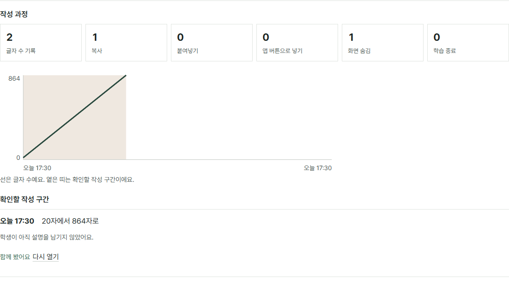
교사와 학생이 같은 도메인의 Google Workspace 학교 계정을 사용해야 합니다. 학교마다 교사가 소유하는 스프레드시트 사본에 학생 글과 작성 기록이 쌓입니다.
학교용 템플릿 사본 만들기 ↗교사 계정에서 ‘학급 현황 → 학생 화면으로 시범 쓰기’를 누르세요. ‘교사 시범’ 목록에서 단계를 고르고 글을 수정해 보세요. ‘대시보드’를 누르면 학급 현황으로 돌아옵니다.
학교용 사본에는 작품과 논문을 등록할 자리가 마련돼 있습니다. 설치 안내의 3단계에 따라 수업에서 사용할 본문과 발췌를 채워 주세요.
학생이 학교 계정으로 접속했는지, 등록한 이메일이 일치하는지, 계정이 활성 상태인지 확인하세요. 학교 도메인 배포를 선택할 수 없다면 학교 Workspace 관리자에게 문의하세요.
이 페이지 주소를 공유하세요. 각 학교가 공식 템플릿을 복사하고 자신의 학교 계정으로 배포하면 학생 기록은 해당 학교 사본에 저장됩니다.
수업에서 막힌 단계나 학생에게 설명이 더 필요했던 화면이 있다면 제작자에게 알려 주세요. 화면 이름과 누른 버튼을 함께 적어 주시면 확인에 도움이 됩니다.
2026. 11. 21. 교사 시범을 여는 동안 진행 상태를 표시하고, 배포 안내에서 활동별 화면을 골라 볼 수 있도록 했습니다.
© 2026 이대형 · 나의 문학 비평 작업실
공식 템플릿의 사본을 설치해 수업에 사용할 수 있습니다. 관리자 설정에서 명단과 자료를 바꾸거나 동료 교사에게 공식 배포 페이지를 공유할 수 있습니다.
이대형의 사전 허락 없이 제작 코드를 복제하거나 변형하여 별도 앱을 만들거나, 코드와 변경한 사본을 재배포할 수 없습니다. AI 도구를 사용한 변형과 재배포에도 같은 조건이 적용됩니다. 제작자와 출처 표시를 유지해 주세요. 외부 저작물은 각 권리자의 이용 조건을 따릅니다.